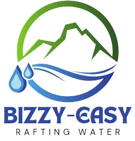

Overview
Purpose
The purpose of this website is to establish a strong online presence and brand identity in the competitive industry. We need the website to establish a strong online presence in today's digital landscape. It serves as a vital platform for disseminating crucial information about our rafting services, enabling convenient bookings and payments the website enhances our online presence, customer engagement, and overall competitiveness in the industry, ensuring the continued success of our rafting company.
Audience
Our target audience will include adventure enthusiasts seeking thrilling outdoor experiences, families looking for memorable vacations, solo travelers seeking new challenges, and even corporate groups planning team-building excursions. To cater to this varied audience, we must create a website with a user-friendly interface, clear navigation, and responsive design that accommodates all devices. In terms of content, we should present information in a way that speaks to the adventurous spirit of our visitors while emphasizing safety and professionalism. Vibrant images and videos of exciting rafting adventures should be complemented by sections addressing safety measures and testimonials to instill confidence in potential customers. Our color scheme should incorporate natural elements like blues and greens to evoke a sense of the great outdoors, while fonts should be easily readable and convey a sense of adventure and excitement. Striking the right balance between adventure and safety will be key in creating a website that appeals to our diverse audience and encourages them to embark on thrilling rafting experiences with our company.
Branding
Website Logo
Style Guide
Color Palette
Palette URL:
https://coolors.co/3f60a4-4a782b-f6f9f7-95a1aa| Primary | Secondary | Accent 1 | Accent 2 |
|---|---|---|---|
| [#4A782B] | [#3f60a4] | [#95A1AA] |
Typography
Heading Font: Big Shoulders Display
Paragraph Font: css2?family
Normal paragraph example
The best Whitewater Rafting in Colorado, White Water Rafting Company offers rafting on the Colorado and Roaring Fork Rivers in Glenwood Springs. Since 1974, we have been family owned and operated, rafting the Shoshone section of Glenwood Canyon and beyond.
Colored paragraph example
Trips vary from mild and great for families, to trips exclusively for physically fit and experienced rafters. No matter what type of river adventures you are seeking, White Water Rafting Company can make it happen for you.
Purpose of my website
The purpose of our website is to become the ultimate resource for adventure seekers and outdoor enthusiasts, providing them with easy access to information about our rafting services, safety measures, booking options, and the unparalleled experiences we offer. Our website aims to inspire and inform potential customers, enabling them to make informed decisions about their adventure vacations with us. By creating a user-friendly, engaging, and informative online platform, our goal is to increase bookings, expand our customer base, and establish our company as a trusted leader in the white water rafting industry.
Audiece
Our target audience consists of a diverse group of adventure enthusiasts, families, solo travelers, and corporate groups seeking thrilling outdoor experiences.
- Demographics: This audience spans various age groups, ranging from young adults in their 20s to active retirees. Financially, they may fall into the middle to upper-middle-income brackets, looking to invest in memorable vacation experiences. Their interests include outdoor activities, nature exploration, and the pursuit of adrenaline-filled adventures.
- Desires: They want not just a vacation but a memorable and exhilarating escape from their daily routines. They seek excitement, the opportunity to bond with family and friends, and the chance to challenge themselves while surrounded by natural beauty.
- Unmet Needs: Many adventure seekers face the challenge of finding reliable, safe, and reputable adventure tour providers. They need a trusted source that not only offers thrilling experiences but also prioritizes safety and professionalism.
- Access: Our audience will typically access our website from various devices, including laptops, desktops, and, increasingly, mobile devices like smartphones and tablets. To accommodate their preferences, our website should be responsive and optimized for both desktop and mobile browsing, ensuring accessibility to our target customers wherever they may be. By understanding the characteristics, desires, and needs of our diverse target audience, we can tailor our website to effectively engage and cater to their specific interests, ultimately driving bookings and enhancing their overall experience with our white water rafting adventures.
Navigation
Site Map
Wireframes
Home